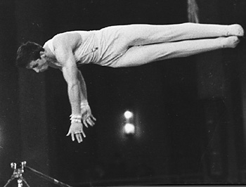

Viktor Klimenko (USSR)
1971 and 1973 European AA Champion
1972 Olympic PH Champion

Medal Total
Olympic Games: 1
Gold, 3 Silver, 1
Bronze
World Championships: 2 Silver, 1
Bronze
European Championships: 5 Gold, 4
Silver, 2 Bronze
Viktor Klimenko was born in Moscow on February 25, 1949. His older brother Mikhail did gymnastics, and one day Viktor followed him to the training hall. Training at the Central Army Sports Club, his first coach was Vladislav Brezhnev, followed by Konstantin Karakashyants (who had trained Sergei Diomidov). Brother Mikhail also coached Viktor towards the end of his career (Mikhail's most famous pupil was 1978 world champion Elena Mukhina). A member of the USSR Sports Committee for rhythmic gymnastics in the 1970s, Viktor is married to Larisa Petrik.
Competition Results
1965
Jr. USSR Championships: 1st AA
Mexico International: 7th AA, 2nd FX, 4th V, 4th PB
1966
Jr. Friendship Tournament (Druzhba): 2nd Team, 9th AA, 1st V, 2nd R, 2nd HB
Jr. USSR Championships: 1st AA
1967
Pre-Olympics: 9th AA
USSR Championships: 17th AA, 1st V, 2nd FX, 3rd PB, 6th PH
1968
GDR-USSR Dual Meet: 1st Team, 3rd AA
Olympic Games: 2nd Team, 7th AA, 3rd PB, 6th PH
USSR Championships: 3rd AA, 1st FX, 1st PH, 1st V, 2nd PB
USSR Cup: 2nd AA
1969
European Championships: 2nd AA, 1st V, 1st HB, 2nd
R, 2nd PB, 6th FX
POL-USSR Dual Meet: 1st Team, 2nd AA
USSR Cup: 3rd AA, 1st V, 2nd FX, 2nd PB, 3rd R, 6th HB
1970
Chunichi Cup: 2nd AA
USA-USSR Dual Meet: 1st Team, 1st AA
USSR Championships: 2nd AA
USSR-FIN: 1st Team, 1nd AA, 1st FX, 1st PB, 2nd R, 2nd V, 3rd PH, 6th HB
USSR-GDR: 1st Team, 2nd AA
World Championships: 2nd Team, 5th AA, 2nd V, 3rd PH,
5th PB, 6th FX
1971
European Championships: 1st AA
JPN-USSR Dual Meet: 1st V, 2nd PH, 4th R, 4th PB
Moscow Spartakiad: 2nd AA, 1st FX, 1st VT, 1st PB
USA-USSR Dual Meet: 1st Team, 1st AA
USSR Cup: 1st AA
1972
Olympic Games: 2nd Team, 6th AA, 1st PH, 2nd V,
4th PB
USSR Championships: 3rd AA
USSR Cup: 2nd AA, 1st PB, 3rd HB
USSR-HUN: 1st Team, 3rd AA
1973
European Championships: 1st AA, 1st R, 1st PB, 2nd
FX, 3rd PH
USSR-JPN Dual Meet: 2nd Team, 1st AA, 1st FX, 1st V, 1st HB, 2nd PH, 3rd PB
1974
Moscow News: 1st AA, 1st V, 1st PB, 2nd FX
USSR Championships: 1st AA
1975
European Championships: 7th AA, 3rd PB, 5th HB, 6th R
Moscow News: 1st AA, 1st R
USSR Championships: 2nd AA, 5th FX, 5th V, 5th PB
1976
Riga International: 9th AA
USSR Cup: 11th AA
This page was created on October
12, 2002 and was last updated on March 27, 2026.
© Gymn Forum